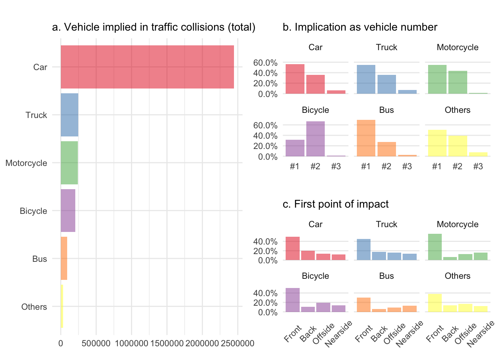
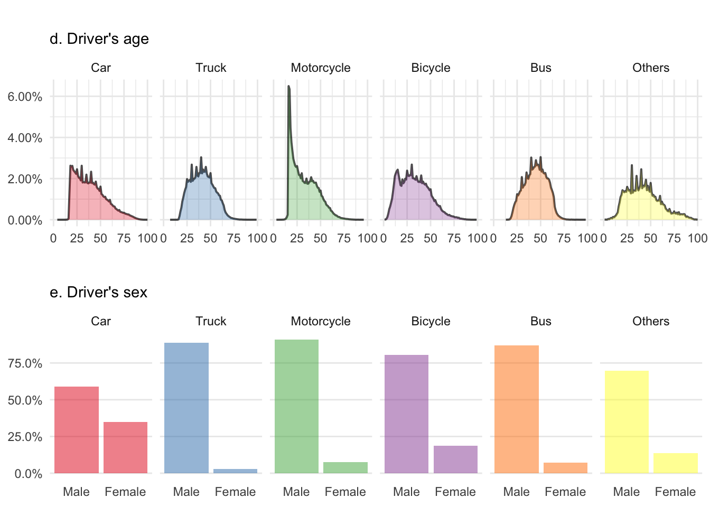
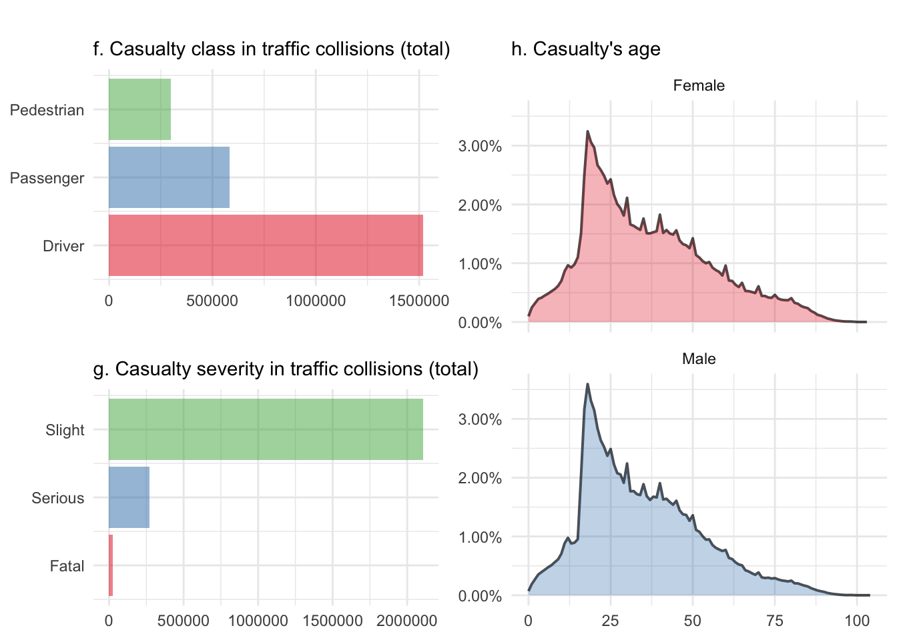

Many thousands of datasets are being published and regularly updated by government departments and agencies, public bodies or local authorities. Anybody can use this data to learn more about how government works, carry out research or build applications and services. All the data is made available through different datahubs and centralized in Europe via open data Europa.
On data.gov.uk I’ve found files providing detailed road safety data about the circumstances of personal injury road accidents in Great Britain and the consequential casualties. The data relate only to personal injury accidents on public roads that are reported to the police, and subsequently recorded, using the STATS19 accident reporting form.
Data, however, isn’t per se information neither does this information transform by itself into knowledge so I propose we have a look at it. There are probably some trends for accidents involving the different road users and maybe we can check if road safety campaigns are effective.
Read the data
I’m using here a concatenated dataset including all recorded accidents from 2005 to 2015 and composed of three .csv files: (i) accident circumstances, with details about location, severity, weather, etc; (ii) casualties, referencing knowledge about the victims; and (iii) vehicles, which contains more information about the vehicle type and maneuvers, as well the some information about the driver.
I’d recommend that we use read_csv, which is significantly faster than read.csv. When it comes to files this size, it starts to matter.
# Read the three tables
accidents0515 <- read_csv("../data/Accidents0515.csv")
casualties0515 <- read_csv("../data/Casualties0515.csv")
vehicles0515 <- read_csv("../data/Vehicles0515.csv")Right now, all this data is still like frozen knowledge - all variables are coded rather than containing textual strings; and if we want to make sense out of it we will need to have a look at the look up tables, which are also available towards the bottom of the webpage.
We don’t need to open this file here, but I found it extremely useful, when not simply compulsory to quickly localize and decode all the variables. Sometimes, you have to somehow torture your data a little bit to extract the information out of it (rhetorically, no data were harmed during the redaction of this post - editor’s note).
What can we learn from the vehicles?
This data is already extremely well organized, so there is no need for an extensive wrangling work. It contains 3.3 million vehicles implicated in accidents over the 10 year period and 22 variables that we simply have to decode. That’s generally something which can be done quickly using %>% before injecting the result to ggplot2. But let’s do it here once for the vehicle type as this is something that we are going to use quite often.
I want to keep only the five most common types here. My guess is that we can reasonably assume that trams, ridden horses, and agricultural vehicles can be regrouped altogether under others.
# Decode Vehicle_Type
vehicles0515$Vehicle <- ifelse(vehicles0515$Vehicle_Type == 1, "Bicycle",
ifelse(vehicles0515$Vehicle_Type %in% c(2:5, 97), "Motorcycle",
ifelse(vehicles0515$Vehicle_Type %in% c(8:9), "Car",
ifelse(vehicles0515$Vehicle_Type %in% c(10:11), "Bus",
ifelse(vehicles0515$Vehicle_Type %in% c(19:21, 98), "Truck", "Others")))))Since we get a chance to, let’s also arrange them and convert this to a factor.
# Create and arrange levels
levels <- vehicles0515 %>%
group_by(Vehicle) %>%
summarise(n = n()) %>%
arrange(desc(n))
# Convert to factor
vehicles0515$Vehicle <- factor(vehicles0515$Vehicle, levels = levels$Vehicle)Alright, now to get the total number of vehicles implicated in traffic collisions, we need to group_by vehicle and summaries only. Let’s save the result for later on.
vehTot <- vehicles0515 %>%
group_by(Vehicle) %>%
summarise(n = n()) %>%
ggplot(aes(x = Vehicle, y = n, fill = Vehicle)) +
geom_bar(stat = "identity", alpha = .5, position = position_dodge()) +
scale_fill_brewer(palette = "Set1") +
scale_x_discrete(limits = rev(levels(vehicles0515$Vehicle))) +
coord_flip() +
theme_minimal() +
theme(legend.position = "none") +
labs(x = NULL, y = NULL,
title = "",
subtitle = "a. Vehicle implied in traffic collisions (total)")We do have the vehicle reference number, i.e. was it the first one, the second, etc. We can group_by vehicle reference too and mutate to get a percentage.
vehNum <- vehicles0515 %>%
count(Vehicle, Vehicle_Reference) %>%
ungroup %>%
group_by(Vehicle) %>%
mutate(p = n/sum(n)) %>%
filter(Vehicle_Reference <= 3) %>%
ggplot(aes(x = Vehicle_Reference, y = p, fill = Vehicle)) +
geom_bar(stat = "identity", alpha = .5, position = position_dodge()) +
scale_fill_brewer(palette = "Set1") +
scale_x_continuous(breaks = c(1, 2, 3), labels = c("#1", "#2", "#3")) +
scale_y_continuous(labels = percent) +
theme_minimal() +
theme(panel.grid.minor = element_blank(),
panel.grid.major.x = element_blank()) +
theme(legend.position = "none") +
labs(x = NULL, y = NULL,
title = "",
subtitle = "b. Implication as vehicle number") +
facet_wrap(~Vehicle)Also available is the first point of impact, that is where the vehicle was hit first. If we group_by 1st_Point_of_Impact and mutate we get a percentage of it.
vehImp <- vehicles0515 %>%
count(Vehicle, `1st_Point_of_Impact`) %>%
ungroup %>%
group_by(Vehicle) %>%
mutate(p = n/sum(n)) %>%
filter(`1st_Point_of_Impact` > 0) %>%
ggplot(aes(x = `1st_Point_of_Impact`, y = p, fill = Vehicle)) +
geom_bar(stat = "identity", alpha = .5, position = position_dodge()) +
scale_fill_brewer(palette = "Set1") +
scale_x_continuous(breaks = c(1, 2, 3, 4), labels = c("Front", "Back", "Offside", "Nearside")) +
scale_y_continuous(labels = percent) +
theme_minimal() +
theme(panel.grid.minor = element_blank(),
panel.grid.major.x = element_blank()) +
theme(legend.position = "none",
axis.text.x = element_text(angle = 45, vjust = 0.5)) +
labs(x = NULL, y = NULL,
title = "",
subtitle = "c. First point of impact") +
facet_wrap(~Vehicle)Okay, let’s organize this into a first layout.
# Define position of each element in the layout
layVeh <- rbind(c(1, 2), c(1, 3))
# Arrange all figure on a grid
grid.arrange(vehTot, vehNum, vehImp, layout_matrix = layVeh)
Oh boy! That is what I call data nicely transformed into information. Let me highlight a few things here. First, without knowing the total number of vehicles circulating on English roads, I cannot normalize a. and cars won hands down because they are overrepresented. Also it was totally fine to add horses and trams under others as the category ranks dead last. This confirms my assumption that both are very safe in the United Kingdom. In fact, I haven’t been able to find a single collision between a horse and a tram in ten years.
The vehicle reference number b. and the first point of impact c. help to nicely reveal the differences between four wheel vehicles and the two wheeled ones. Cyclists were clearly being hit by others rather than causing the accident themselves and have along with motorcyclists more side collisions than car and trucks, whereas buses clearly less frontal ones.
What about the driver
Behind the driving wheel, there is the driver’s age we can have a look at as well. The code is more or less the same just adapted to get it with geom_line.
vehAge <- vehicles0515 %>%
count(Vehicle, Age_of_Driver) %>%
ungroup %>%
group_by(Vehicle) %>%
mutate(p = n/sum(n)) %>%
filter(Age_of_Driver > 0) %>%
ggplot(aes(x = Age_of_Driver, y = p, fill = Vehicle)) +
geom_line(size = .7, alpha = .7) +
geom_ribbon(aes(ymin = 0, ymax = p), alpha = .3) +
scale_fill_brewer(palette = "Set1") +
scale_y_continuous(labels = percent) +
theme_minimal() +
labs(x = NULL, y = NULL,
title = "",
subtitle = "d. Driver's age") +
theme(legend.position = "none") +
facet_wrap(~Vehicle, ncol = 6)And of course the driver’s sex. Note that I’ve been removing all the unknown values since the beginning using filter. I’ve calculated the percentage before though.
vehSex <- vehicles0515 %>%
count(Vehicle, Sex_of_Driver) %>%
ungroup %>%
group_by(Vehicle) %>%
mutate(p = n/sum(n)) %>%
filter(Sex_of_Driver %in% 1:2) %>%
ggplot(aes(x = Sex_of_Driver, y = p, fill = Vehicle)) +
geom_bar(stat = "identity", alpha = .5, position = position_dodge()) +
theme_minimal() +
scale_fill_brewer(palette = "Set1") +
scale_x_continuous(breaks = c(1, 2), labels=c("Male", "Female")) +
scale_y_continuous(labels = percent) +
theme_minimal() +
theme(panel.grid.minor = element_blank(),
panel.grid.major.x = element_blank()) +
labs(x = NULL, y = NULL,
title = "",
subtitle = "e. Driver's sex") +
theme(legend.position = "none") +
facet_wrap(~Vehicle, ncol = 6)Time to organize this into a second layout.
# Define position of each element in the layout
layDri <- rbind(c(1, 1), c(2, 2))
# Arrange all figure on a grid
grid.arrange(vehAge, vehSex, layout_matrix = layDri)
The driver’s age figure d. reflects the risks taken by young people with bicycles, cars and particularly motorcycles. There is a small peak for teenagers riding a bike just before this gets transferred to cars and motorbikes around 20. The latter one being really impressive. We can also see truckers and probably bus drivers getting retired after 60.
Among all the figures here, e. is probably the most impressive one. If there is one thing that women can do better than men, it’s definitively driving! Although I’d like to shortly advocate for my gender and add that there are probably more women who drive a car than a truck and that’s where we score the best (read ‘less bad’ instead if you don’t feel like playing the devil’s advocate).
What about the others
If you have a glimpse at the casualty report, you will see that this contains 2.4 million people, who were injured or killed during that time. The organization of the variable is the same, so there is no need to change many things before we can play with it. Note that I’m not spending time decoding the variables beforehand anymore, I simply use as.factor and set the labels manually.
We can first check if the person who got injured was the driver, a passenger, or a pedestrian and save the results for another layout.
casCla <- casualties0515 %>%
group_by(Casualty_Class) %>%
summarise(n = n()) %>%
ggplot(aes(x = Casualty_Class, y = n, fill = as.factor(Casualty_Class))) +
geom_bar(stat = "identity", alpha = .5, position = position_dodge()) +
scale_fill_brewer(palette = "Set1") +
scale_x_continuous(breaks = c(1, 2, 3), labels = c("Driver", "Passenger", "Pedestrian")) +
coord_flip() +
theme_minimal() +
theme(legend.position = "none") +
labs(x = NULL, y = NULL,
title = "",
subtitle = "f. Casualty class in traffic collisions (total)")Then take a look at the severity, i.e. was that person fatally, seriously, or only slightly injured in the collision.
casSev <- casualties0515 %>%
group_by(Casualty_Severity) %>%
summarise(n = n()) %>%
ggplot(aes(x = Casualty_Severity, y = n, fill = as.factor(Casualty_Severity))) +
geom_bar(stat = "identity", alpha = .5, position = position_dodge()) +
scale_fill_brewer(palette = "Set1") +
scale_x_continuous(breaks = c(1, 2, 3), labels = c("Fatal", " Serious", "Slight")) +
coord_flip() +
theme_minimal() +
theme(legend.position = "none") +
labs(x = NULL, y = NULL,
title = "",
subtitle = "g. Casualty severity in traffic collisions (total)")And finally, at the casualty’s age. Here we can further distinguish between male and female as we have observed a gender difference previously.
casAge <- casualties0515 %>%
count(Sex_of_Casualty, Age_of_Casualty) %>%
ungroup %>%
group_by(Sex_of_Casualty) %>%
mutate(p = n/sum(n)) %>%
filter(Age_of_Casualty >= 0) %>%
filter(Sex_of_Casualty >= 0) %>%
mutate(Sex = ifelse(Sex_of_Casualty == 1, "Male", "Female")) %>%
ggplot(aes(x = Age_of_Casualty, y = p, fill = as.factor(Sex))) +
geom_line(size = .7, alpha = .7) +
geom_ribbon(aes(ymin = 0, ymax = p), alpha = .3) +
scale_fill_brewer(palette = "Set1") +
scale_y_continuous(labels = percent) +
theme_minimal() +
labs(x = NULL, y = NULL,
title = "",
subtitle = "h. Casualty's age") +
theme(legend.position = "none") +
facet_wrap(~Sex, ncol = 1)And today’s last layout.
# Define position of each element in the layout
layCas <- rbind(c(1, 3), c(2, 3))
# Arrange all figure on a grid
grid.arrange(casCla, casSev, casAge, layout_matrix = layCas)
Alright, there is no real surprise here. The casualty class figure f. isn’t normalizable either and mainly shows here that there is always a driver in the vehicle. That’s rather fortunate and somehow highlights the fact that there is a human implied in all these accidents. Cars don’t get involved themselves, at least for now and until we get self-driving cars.
The casualty severity figure g. shows that most injuries are slight ones, which is extremely fortunate too. It would be interesting to have a look at this over time, to check if this has changed over the ten year period but this is something I’m working on for part II of this series. Figure h. highlights, again, the risk taken by young people and shows that unlike the driver’s sex, the casualty distribution over time isn’t different for men and women.
Time to wrap up for now
I cannot really say I’ve learned a lot from this data yet as everything seems to be common knowledge already. Yes, there are more cars on the road than any other vehicle and mainly, we drive forwards, so hits are more frequently frontal. Okay, but we’ve also observed the really impressive difference per driver’s sex. I wouldn’t claim that I wasn’t aware of this but I must confess that I didn’t know it was so dramatic. However, when it comes to casualty in collisions, only age matter.
That young people on a motorcycle get more involved in accident before they reach the age of 25 isn’t really a surprise but still impressive. Like bicycle, but not quite as much, they’re also more involved as the second vehicle. Being hit rather than causing the accident themselves. Of course it might be that you’ve taken more or less risk on your bicycle before being hit and this could then correlate with the age or sex of the biker. But again, this is something I’d like to work on in part II.
Finally, and even if all this seems kind of intuitive, it feels much more real now that I’ve done the analysis for myself. Once thawed, data can really help make up your mind.